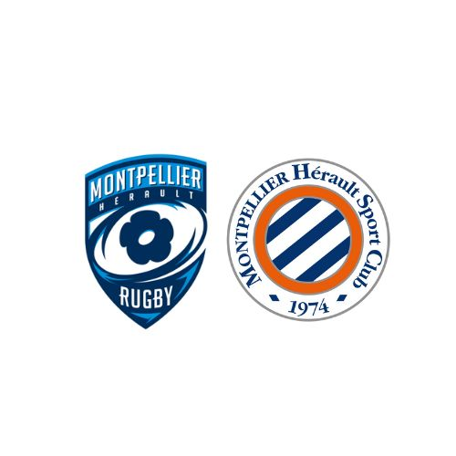

Je m'appelle Elisa Feufeu, je suis en deuxième année de BUT Techniques de Commercialisation
à l'IUT de Montpellier-Sète je me spécialise en business international : achat & vente. Passionné par le marketing, la gestion, et le développement commercial, je vous invite à découvrir ici un peu plus sur moi, mon parcours, mes projets et mes ambitions professionnelles.
Vous pouvez accéder à mon CV
Ma vidéo
Mon parcours
Depuis toujours, j'ai été attiré par le monde du commerce, des entreprises, et l’international. C'est pourquoi j'ai choisi de m'orienter, à la suite de mon Bac STMG,
vers un BUT TC, une formation reconnue pour sa polyvalence et son approche pratique du secteur commercial. Ce cursus me permet de développer
des compétences dans de nombreux domaines, tels que :
La négociation commerciale et la relation client
Le marketing stratégique et opérationnel
La gestion de projets et l’analyse de marché
Les techniques de vente et la communication d’entreprise
Le management et la gestion financière
Mes compétences
Au cours de mes études et de mes expériences professionnelles, j'ai acquis un certain nombre de compétences que je m'efforce d'améliorer chaque jour.
Voici quelques-unes de celles que je souhaite mettre en avant :
Compétences en marketing : Analyser des marchés, définir des stratégies de communication et de marketing, et mettre en place des actions concrètes.
Gestion de la relation client : Savoir identifier les besoins des clients, offrir des solutions adaptées, et établir des relations durables.
Compétences commerciales : Prospection, négociation, vente et suivi clients.
Gestion de projets : Planification, coordination, et gestion de projets commerciaux et marketing.
Compétences informatiques : Maîtrise de [outils ou logiciels que tu maîtrises, par exemple Excel, Salesforce, etc.].
Mes expériences professionnelles

Intérimaire à la buvette du MHR et MHSC - depuis octobre 2024
Encaissement rapide
Service lors de période de forte influence
Relation client : accueil, conseil, bonne humeur, gestion des demandes
Travail en équipe dans un environnement dynamique
Job étudiant à La Poste PIC de Poitiers - juillet 2024 & 2025
Tri du courrier et des colis
Utilisation des machines de tri et gestion des éventuels blocages
Travail en équipe
Adaptabilité à travailer dans un environnement nocturne
Job étudiant à Besson Chaussures Poitiers - août 2024 & 2025
Accueil et accompagnement client
Mise en rayon, réassort et organisation des stocks
Mise en place des promotions et étiquetage des produits
Gestion complète de la caisse
Stage BUT1 Siège social Mutuelle de Poitiers Assurances Poitiers - décembre 2024
Création et diffusion de contenus de communication
Audit des réseaux sociaux et du site internet
Benchmarking sur les contrats des principaux concurrents
Élaboration de supports visuels et rédactionnels
Stage Terminale Lueurs du Monde Bordeaux - décembre 2023
Accueil et conseil des clients pour la préparation de leurs voyages
Aide à la réservation et à l’organisation de séjours
Suivi administratif des dossiers clients et gestion des plannings
Stage Première Sofitel Le Miramar Biarritz - décembre 2022
Gestion des réservations
Accueil des clients étrangers et VIP
Fermeture de caisse
Gestion administrative et suivi des demandes spécifiques des clients